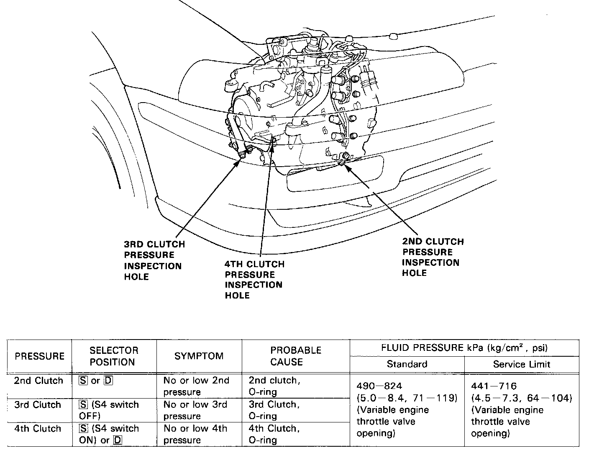

Clutch Pressure Measurement In [S] and [D] Ranges
Clutch Pressure Measurement in [S] and [D] ranges1 Set the parking brake securely and block the rear wheels.
2. Jack up the front of the car and support it with jack stands.
3. Attach the gauge set to the second. third and fourth clutch pressure test ports.
4. Connect the intake manifold vacuum tube of the vacuum modulator.
- Before connecting the vacuum tube, check that the throttle pressure B is normal, and the vacuum tube is not damaged and in good shape.
5. Start the engine and warm it up to normal operating temperature (until the cooling fan comes on twice).
6. With the engine idling, move the selector lever to [S] or [D].
7. Slowly move the throttle linkage to increase engine rpm until pressure is indicated on the appropriate gauge. Then release the throttle linkage, allowing the engine to return to an idle, and record the pressure reading.
NOTE: Record the pressure reading before the pressure indicated on the gauge reads naught (0) if the transmission shifts down.
8. Repeat step 7 for each clutch pressure being inspected (pressure when the throttle pressure B is naught (0)).
9. With the engine idling, disconnect the negative tube. Increase the engine rpm until pressure is indicated on the appropriate gauge. Record the highest pressure reading obtained.
- Do not increase the engine rpm excessively when measuring third clutch pressure is [S] range (with the S4 switch in OFF) (or when measuring fourth clutch pressure in [D] range). The transmission will not shift up in these ranges regardless of speed of the engine.
10. Repeat step 9 for each clutch pressure being inspected (pressure when the throttle is fully open).

11. The clutches are normal if the pressures measured are held within the limits shown in image.